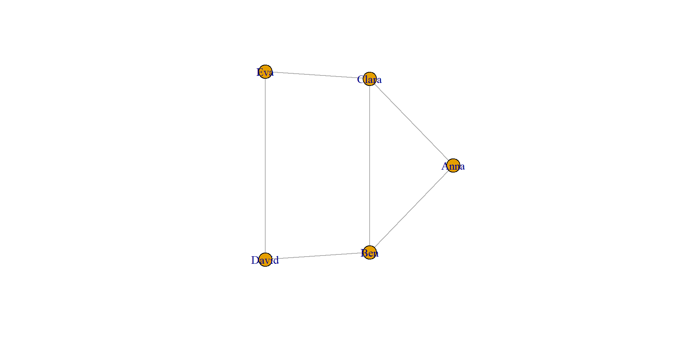
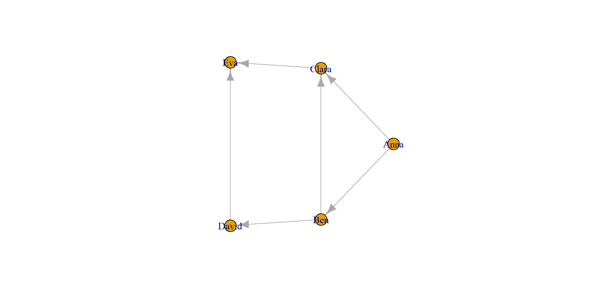
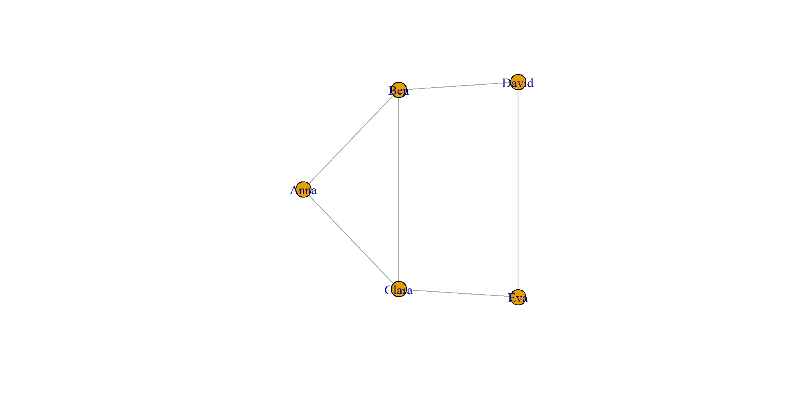

Netzwerk-Repräsentationen, Adjazenzmatrizen und Visualisierung mit igraph
2026-06-25
Nach dieser Einheit können Sie:
igraph-Objekt erzeugen,plot() visualisieren und gestalten.Für die Beispiele verwenden wir vor allem igraph.
Note
igraph verbindet drei Dinge: Netzwerkdaten speichern, Netzwerke analysieren und Netzwerke visualisieren.
Manche Daten bestehen nicht nur aus einzelnen Beobachtungen, sondern aus Objekten und Beziehungen.
Beispiele:
Tip
Ein Knoten steht für ein Objekt.
Eine Kante steht für eine Beziehung zwischen zwei Objekten.
Ein Netzwerk kann unterschiedlich gespeichert werden:
| Repräsentation | Idee |
|---|---|
| Kantenliste | Jede Zeile ist eine Beziehung |
| Knotenliste | Zusatzinformationen zu den Knoten |
| Adjazenzmatrix | Zeilen und Spalten sind Knoten |
igraph-Objekt |
Netzwerkstruktur für Analyse und Plot |
Eine Kantenliste beschreibt, welche Knoten miteinander verbunden sind.
IGRAPH 9ea72e5 UN-- 5 6 --
+ attr: name (v/c)
+ edges from 9ea72e5 (vertex names):
[1] Anna --Ben Anna --Clara Ben --Clara Ben --David Clara--Eva
[6] David--Eva Tip
Eine Kantenliste ist oft die einfachste Form, ein Netzwerk tabellarisch zu speichern.
Bei einem ungerichteten Graphen zählt nur, dass eine Verbindung existiert.
Bei einem gerichteten Graphen hat jede Kante eine Richtung.


Erstellen Sie mit igraph ein kleines Netzwerk.
graph_from_data_frame().plot().directed = TRUE und einmal directed = FALSE aus.Eine Knotenliste enthält Zusatzinformationen zu den Knoten.
Die erste Spalte der Knotenliste muss zu den Knotennamen in der Kantenliste passen.
[1] "A" "A" "A" "B" "B"[1] 22 24 21 25 23Important
Die Knotenliste ergänzt Attribute. Die Kantenliste definiert die Beziehungen.
Eine Adjazenzmatrix ist eine Matrixdarstellung eines Netzwerks.
1: Kante vorhanden0: keine Kante vorhanden
Die Matrix A zeigt direkte Verbindungen.
Die Matrix A %*% A zählt Wege der Länge 2.
Anna Ben Clara David Eva
Anna 2 1 1 1 1
Ben 1 3 1 0 2
Clara 1 1 3 2 0
David 1 0 2 2 0
Eva 1 2 0 0 2Note
Wenn in A2[i, j] ein Wert größer als 0 steht, gibt es mindestens einen Weg von Knoten i nach Knoten j über genau einen Zwischenknoten.
Für kleine Graphen kann man Erreichbarkeit über Matrixpotenzen prüfen.
# Gewichtete Adjazenzmatrix in eine 0/1-Matrix umwandeln
A_bin <- ifelse(A > 0, 1, 0)
# Wege mit Länge 1, 2 und 3 berechnen
wege_1 <- A_bin
wege_2 <- A_bin %*% A_bin
wege_3 <- A_bin %*% A_bin %*% A_bin
# Prüfen, ob mindestens ein Weg existiert
R <- (wege_1 + wege_2 + wege_3) > 0
# TRUE/FALSE in 1/0 umwandeln
ifelse(R, 1, 0) Anna Ben Clara David Eva
Anna 1 1 1 1 1
Ben 1 1 1 1 1
Clara 1 1 1 1 1
David 1 1 1 1 1
Eva 1 1 1 1 1Tip
Die Erreichbarkeitsmatrix zeigt, ob Knoten über Wege bis zu einer bestimmten Länge verbunden sind.
Gegeben ist die folgende gerichtete Adjazenzmatrix.
Bearbeiten Sie:
A %*% A.A, Spalte C.A über höchstens zwei Schritte erreichbar?In echten Projekten liegen Netzwerkdaten häufig in Dateien.
Die Daten bestehen aus:
characters.csv: Knoten, also Figurenrelations.csv: Kanten, also BeziehungenNote
Im Harry-Potter-Beispiel steht + für positive und - für negative Beziehungen.
Vor dem Erzeugen des Graphen sollten die Daten geprüft werden.
Tip
Wenn setdiff() leer ist, verweisen alle Kanten auf vorhandene Knoten.
Zwischen denselben Figuren können mehrere Beziehungen vorkommen.
relations_gewichtet <- aggregate(
x = list(weight = rep(1, nrow(relations))),
by = list(
source = relations$source,
target = relations$target,
type = relations$type
),
FUN = sum
)
relations_gewichtet$source <- as.character(relations_gewichtet$source)
relations_gewichtet$target <- as.character(relations_gewichtet$target)
head(relations_gewichtet)Note
Die Spalte weight zählt, wie häufig eine bestimmte Beziehung vorkommt.
igraph verwendet das Attribut name als Knoten-ID.
Das Netzwerk enthält:
house, type und weightTip
Mit V(g) greifen Sie auf Knoten zu.
Mit E(g) greifen Sie auf Kanten zu.
Note
Wenn attr = "weight" gesetzt ist, enthält die Matrix Kantengewichte statt nur 0 und 1.
Arbeiten Sie mit characters.csv und relations.csv.
igraph-Objekt.Die einfachste Visualisierung entsteht mit plot().
Important
Die erste Netzwerkvisualisierung ist oft unübersichtlich. Das ist normal. Gute Netzwerkvisualisierung entsteht schrittweise.
Bei größeren Netzwerken überlappen Labels schnell.
Tip
Nicht jeder Knoten muss beschriftet werden.
Ein Layout bestimmt, wo Knoten im Plot platziert werden.
Note
Viele Layouts enthalten Zufall. Für reproduzierbare Grafiken: set.seed() setzen oder das Layout speichern. Eine Übersicht über Layout-Funktionen findet sich in der igraph-Dokumentation zu Layouts.
Der Grad beschreibt, mit wie vielen Kanten ein Knoten verbunden ist.
Bei größeren Netzwerken ist ein Ausschnitt oft lesbarer.
g_gryffindor <- induced_subgraph(
g_hp,
vids = V(g_hp)[house == "Gryffindor"]
)
plot(
g_gryffindor,
layout = layout_with_fr(g_gryffindor),
vertex.label = V(g_gryffindor)$character,
vertex.label.cex = 0.7,
vertex.size = 6 + degree(g_gryffindor, mode = "all"),
edge.arrow.size = 0.4,
edge.curved = 0.2,
main = "Teilnetzwerk: Gryffindor"
)Grundlage: Kapitel „Daten visualisieren mit igraph“ aus dem R-Programmierung-Skript:
https://bna2022.github.io/Intro2R/chapters/06-graphen.html
06 Graphen